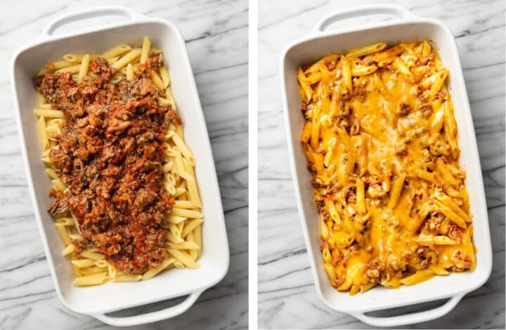

Home
Minced Meat Casserole

Description
This cheesy beef and pasta casserole is sure to be a hit with the kiddos. It’s also easily adaptable based on what you’ve got in the fridge/pantry/etc. You could throw in some extra veggies if you want. It’s very tasty for how few ingredients are in this budget-friendly meal
Ingredients
- 1 pound uncooked penne
- 1 tablespoon olive oil
- 1 pound lean ground beef
- 1/2 medium onion chopped
- 1 clove garlic minced
- 1.5 cups marinara sauce
- Salt & pepper to taste
- 1.5 cups shredded cheddar cheese
Steps
- Preheat your oven to 400F and move the rack to the middle position. Grease a 9×13 baking dish (I use Pam spray).
- Boil a large, salted pot of water for the penne. Cook it for 10 minutes (it should be slightly underdone so it doesn't get mushy).
- Add the oil, beef, and onion to a skillet. Sauté over medium-high heat, breaking the meat up as you go along, for 10 minutes. Once it gets going, stir in the garlic. Spoon out excess fat if needed.
- Stir in the marinara sauce and warm through. Give it a taste and season with salt & pepper as needed.
- Drain the pasta and pour it into the baking dish. Pour the beef mixture over top and then toss until it's combined with the pasta. Top with an even layer of the cheese. If you want it extra cheesy, you can stir in an additional half cup of cheese prior to topping it with the rest of the cheese.
- Bake for 10 minutes, uncovered, until the cheese is nicely melted. I then broil it for a few minutes (optional) to brown the cheese up a bit. Serve immediately.